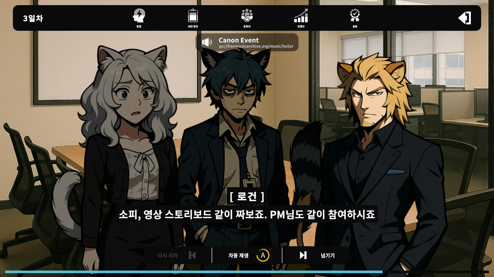
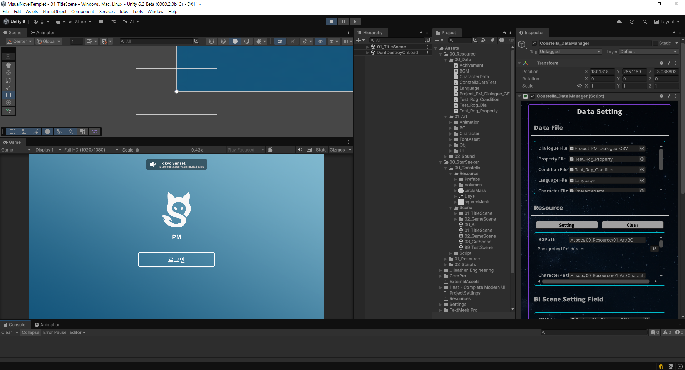
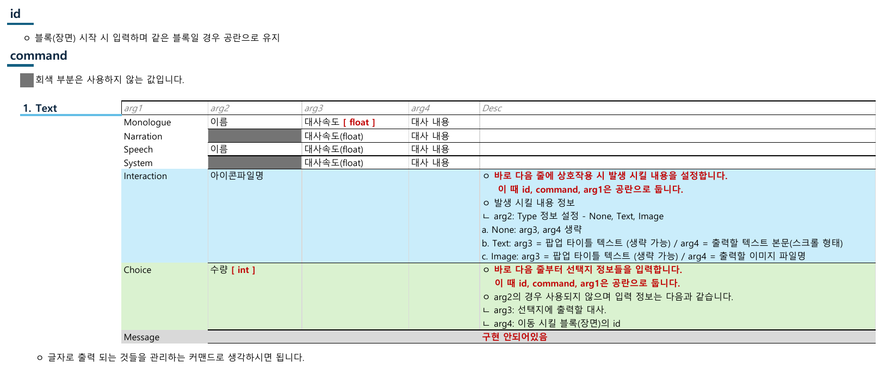
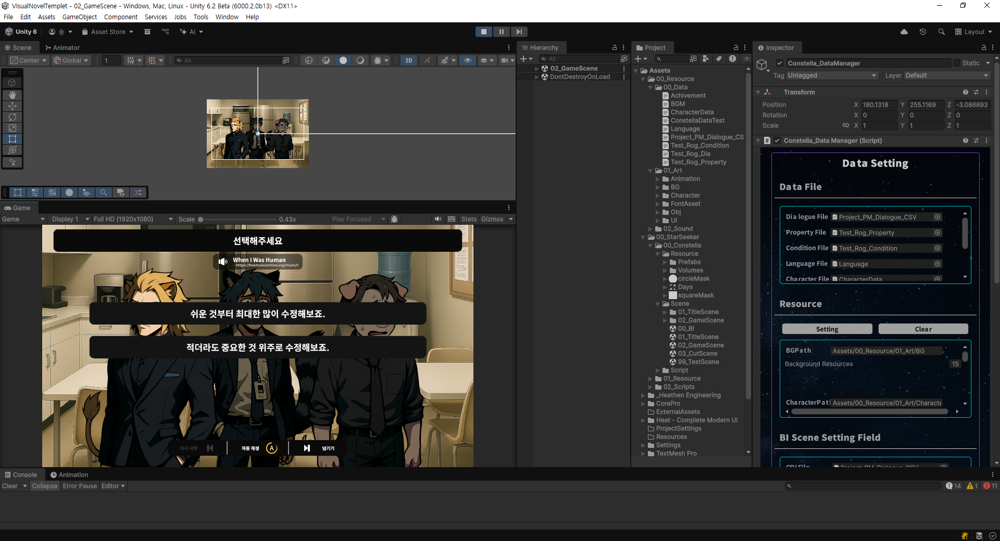
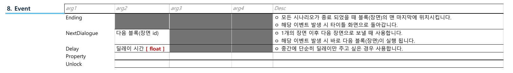
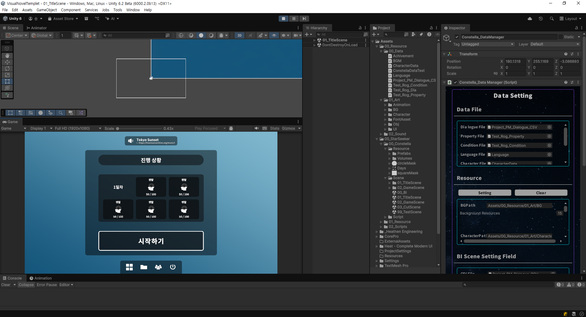
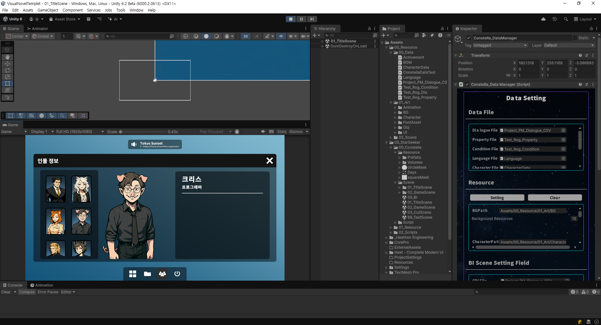

01 · 아이디어
게임 창업을 준비하며 비주얼노벨 개발을 시작했습니다. 이후 대화·분기 시스템을 바탕으로 제작 도구까지 다루는 방향으로 범위를 확장했습니다.
게임과 제작 도구에서 공통으로 필요한 대화 시스템의 재사용 가능성을 고려했습니다.
02 · 무엇을 만든 건지
CSV 대화와 선택지, 수치·조건 데이터, Inspector의 리소스 설정을 연결하는 Unity 기반 제작 도구를 개발했습니다.
- 대화와 선택지: 데이터로 대사와 분기 흐름을 구성합니다.
- 수치와 조건: 진행에 필요한 속성값과 조건 데이터를 다룹니다.
- 리소스 관리: Inspector에서 대화·속성·조건·언어·캐릭터 데이터 파일과 리소스를 설정합니다.
개발은 2025년 2월부터 6월까지 진행했으며, 협업 종료로 중단했습니다. 다른 프로젝트에서의 실제 재사용이나 완제품 배포 성과를 확인한 상태는 아닙니다.
03 · 환경
- 개발 환경
- Unity · C#
- 개발 기간
- 2025.02–2025.06
- 담당 역할
- 기획·명세·개발 단독 진행
- 개발 상태
- 협업 종료로 개발 중단
AI 활용 범위
AI는 현재 포트폴리오 페이지의 글 작성에만 활용했습니다. 프로젝트의 기획·명세·개발은 본인이 단독으로 진행했습니다.
04 · 작업물
실행 예시

캐릭터·배경·대사와 재생 제어가 함께 표시된 당시 실행 화면입니다.
데이터 설정

Data Setting Inspector에서 대화·속성·조건·언어·캐릭터 데이터 파일과 리소스를 연결한 모습을 볼 수 있습니다.
Text 명세와 선택지

명세 초안에는 Text 명령과 id/command 작성 규칙이 정리되어 있습니다. Message의 미구현 표시를 원문 그대로 보존했습니다. 문서 명세는 실행 로그나 기능 완성의 증거가 아닙니다.

두 선택지가 표시된 화면입니다. 카드에 사용한 대화 실행 화면에도 오류 6개·경고 1개가 남아 있어, 이 자료만으로 안정화 완료를 주장하지 않습니다.
Event 명세

Ending·NextDialogue·Delay 설명과 Property·Unlock의 빈 행을 포함합니다. 미작성 항목을 구현 완료로 해석하지 않습니다.
보조 화면


05 · 코멘트
게임과 제작 도구 모두 대화·분기 시스템이 필요했기 때문에, 기존 작업을 활용할 수 있다고 보고 방향 변경을 수용했습니다.